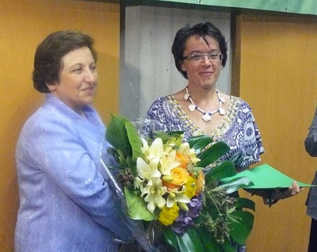

|
|
|
Browsing
Contact Us |
Campaigners |
Face to Face |
Tribune |
Interview |
News |
On the Web |
One Million |
Report
Farsi | Français | German | Italian | Spanish | العربية Also in this section
|

Shirin Ebadi Accepts Alexander Langer Award on Behalf of Nargess Mohammadi Nargess Mohammadi: We Now Have to Speak of Hope and LoveSunday 5 July 2009 Change for Equality: On 2 July, 2009, at a ceremony held in the City of Bolzano, Italy, Shirin Ebadi, the recipient of the Nobel Peace Prize, accepted the 2009 Alexander Langer Award on behalf of Nargess Mohammadi, who could not be present at the award celebration held in her honor. A travel ban placed on Nargess Mohammadi in May 2009, while she was on her way to attend a conference convened by the Nobel Women’s Initiative in Guatemala, prevented her from attending this ceremony as well. Nargess Mohammadi is a journalist and a human rights and women’s rights activist. She also serves as the Deputy Chair of the Defenders of Human Rights, a human rights NGO headed by Shirin Ebadi. Mohammadi was honored with this award in recognition of her bravery in advocating for human rights, specifically in defense of the rights of students, women and other civil society activists. During the Awards’ Ceremony, Nargess Mohammadi telephoned Shirin Ebadi. The call added to the excitement of the ceremony, and those in attendance used the opportunity to demonstrate their feelings and support for Nargess Mohammadi by giving her a long and excited applause. Mohammadi had sent a copy of her speech to be read at the Ceremony, but also used the opportunity to address the audience by telephone.
 Shirin Ebadi thanked the Alexander Langer Foundation for honoring Nargess Mohammadi with this valuable award, and further utilized the opportunity to address recent developments in Iran. She explained that the solidarity of the Italian public with Iranians was effective and explained the situation of human rights defenders in Iran. Ebadi also expressed concern about the human rights situation in Iran, and urged the Iranian government to cease its violent crackdown of protesting citizens in Iran and submit to new elections. An acceptance speech by Nargess Mohammadi was read at the Ceremony. A translation of this speech appears below: Nargess Mohammadi: We have to Speak of Hope and Love Everyone has the right to Freedom of Speech and Thought: Article 19 of the Universal Declaration on Human Rights. If one day we realize the goals of Article 19 of the Universal Declaration on Human Rights, that will be a day of victory for human kind. If one day, humans can, without fear, insecurity, prison or death, express their beliefs and thoughts, and through peaceful means set out to publish those beliefs, authoritarianism will be undermined. But until that day, all those who hope for freedom will have a difficult road ahead. I am very disappointed that I was not able to among you today. On the 8th of May, while on my way to an international women’s conference in Guatemala, I was banned illegally and without any legal order from travel and my passport was confiscated at the airport by security officials who identified themselves as affiliated with Office of the President. You well know what is transpiring in Iran today. Many journalists, human rights defenders, political activists are currently in prison. On the other hand there are painful scenes of the murder of young women and men, which have inflicted a pain in our hearts that is beyond description. The innocent face of Neda, the young woman who has come to symbolize the peaceful protest of Iranians, will not fade from our memories. Of course, the movement and the demands of the Iranian people serve as signs of hope and promise and the realization of a bright future in our country which will indeed lead to freedom. We have to speak of hope and love and what hope is more powerful than the human chain across the world, where individuals from all corners of the world, act in solidarity to support one another. In the introduction of the Universal Declaration of Human Rights, foundational definitions have been provided, such as the unity of human kind as members of the same family, and the inherent dignity of human beings. In other words, the future of each individual in any part of the world, is not the sole concern of governments, rather their well-being is the concern of all members of the human race. Today, speaking in defense of the people of Palestine, the US, Afghanistan, Iran, etc, and raising objections to the violation of human rights by governments, rulers and other powers, is not only not interference in the affairs of another country, which should not be prohibited, it is in fact the duty and commitment of every free individual anywhere in the world. This issue is not only emphasized in the Universal Declaration of Human Rights, but it is emphasized in all religions, in all languages and in various different forms. Saadi the renowned Persian poet puts it beautifully: “The children of Adam are limbs of each other [having been created of one essence].” Along these lines, I would like to thank the reputable and significant Alexander Langer foundation for their support of human rights defenders and for honoring me with their award. I am well aware of the immense value of this important award. This award does not belong to one individual, rather it belongs to all those working toward freedom in Iran. The honoring of human rights defenders around the world with such awards works to create powerful links in the strong and connected chain of human beings around the planet, who have taken up the difficult task of pursuing the path to freedom and democracy with support of the international community. This support makes the road ahead less difficult. |